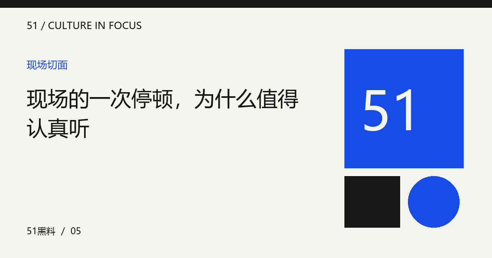

现场的一次停顿，为什么值得认真听
停顿可能是节奏、互动或现场调整。把等待前后发生的内容连起来，比单独放大一个瞬间更有解释力。

停顿有不止一种解释
演出中的短暂停顿，可能来自作品安排、观众互动、技术调整或普通呼吸。仅凭一段切片无法确定原因。先记下停顿之前是什么、之后怎样继续，以及材料是否完整，能帮助你把观察限定在证据允许的范围，不急着给表演者贴上状态标签。
现场反应属于整体节奏
笑声、掌声和观众呼喊，可能改变表演者下一句的时机。录像剪辑又可能压缩这些等待，让现场节奏与屏幕体验不同。评价时交代自己观看的是完整录像还是短片段，可以避免拿不同材料比较，然后把差异全部归因于表演本身。
别把技术现象直接人格化
麦克风、返送和现场组织都可能影响表现，但没有相应信息时也不能随意把问题归给技术团队。面对原因未知的停顿，可以描述听到与看到的现象，再列出需要补充的材料。承认暂时不知道，比为了让解释完整而寻找一个责任人更准确。
具体感受可以保留
不确定原因，并不意味着不能讨论体验。你可以说停顿让自己更期待下一段，也可以说它打断了原有情绪。把感受写成自己的反应，并指出对应段落，就能形成有效表达；不必把个人体验包装成所有现场观众的共同结论。
用前后关系写一段现场笔记
选择一段完整公开表演，记录停顿前的节奏、停顿中的可见互动和恢复后的变化，再写一句自己如何理解。若只能取得短片，就注明观察范围。练习的目标是增加语境，而不是寻找失误，更不需要用虚构的现场人数或掌声强度证明判断。
编辑演示：本文用于展示专题阅读；虚构情境不构成真实人物或事件报道。
下一篇：从问题看回答：一次访谈是怎样被组织的 →